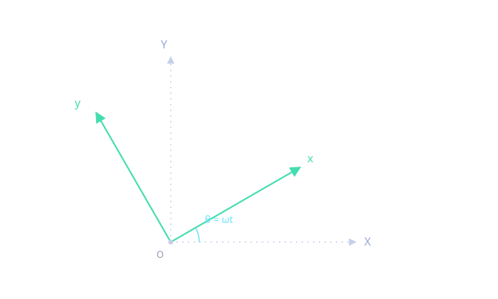
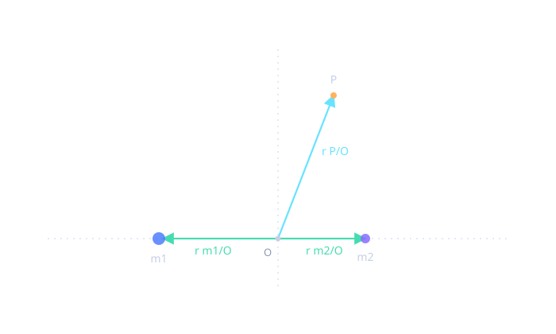
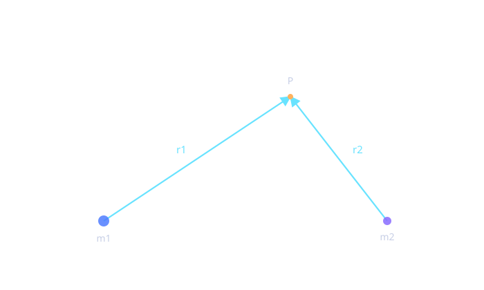
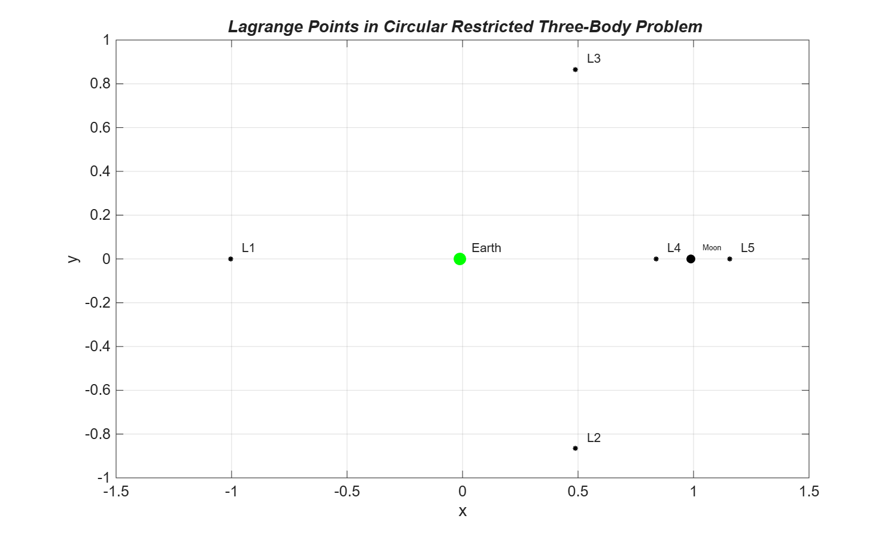
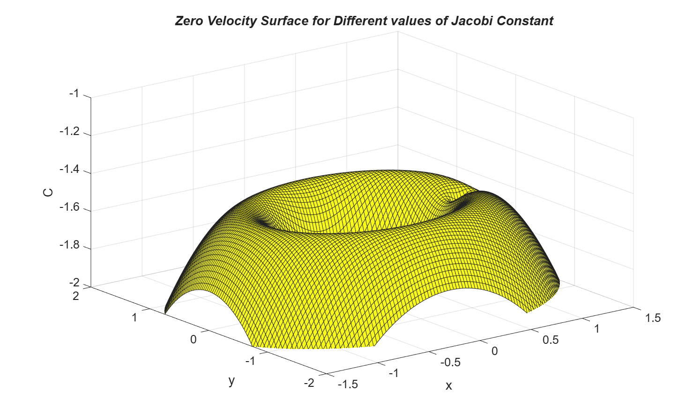

The Planar Circular Restricted Three Body Problem
The circular restricted three body problem for the Earth and Moon system, derived from Newton's second law in a rotating frame, reduced to the Lagrange points and the Jacobi constant that together map out where a third body can and cannot go.
Introduction
When two massive bodies orbit their common center of mass in a circle, and a third body is too small to affect their motion, the problem of that third body's motion is the circular restricted three body problem, CR3BP. Restricting the third body to the same orbital plane as the other two gives the planar circular restricted three body problem, PCR3BP, the case studied here using the Earth and Moon as the two primaries.
The PCR3BP is a standard first model for real astronomical problems, for example the resonance transitions of Jupiter family comets, whose motion is mostly governed by the Sun but meaningfully perturbed by Jupiter, largely within Jupiter's own orbital plane. More generally, the PCR3BP gives a systematic way to construct the initial pieces from which a full N body trajectory can later be built.
Reference frames and equations of motion
Let X, Y, Z be an inertial frame and x, y, z be a rotating frame with its origin at the center of mass of the two primaries m1 and m2, with the X and Y axes forming the primaries' orbital plane.


The position of the third body P in the rotating frame is:
$$r_{P/O} = x\,\hat{b}_1 + y\,\hat{b}_2$$ $$r_{m_1/O} = x_1\,\hat{b}_1, \qquad r_{m_2/O} = x_2\,\hat{b}_1$$
Applying the transport theorem gives the velocity and acceleration of P in the inertial frame, expressed in rotating frame components:
$$V_{P/O} = (\dot{x} - \omega y)\,\hat{b}_1 + (\dot{y} + \omega x)\,\hat{b}_2$$ $$a_{P/O} = (\ddot{x} - 2\omega\dot{y} - \omega^2 x)\,\hat{b}_1 + (\ddot{y} + 2\omega\dot{x} - \omega^2 y)\,\hat{b}_2$$

The vectors from each primary to P are:
$$r_1 = (x - x_1)\,\hat{b}_1 + y\,\hat{b}_2, \qquad r_2 = (x - x_2)\,\hat{b}_1 + y\,\hat{b}_2$$
Applying Newton's second law, with $\mu_1 = Gm_1$ and $\mu_2 = Gm_2$, and separating into $\hat{b}_1$ and $\hat{b}_2$ components, gives the nonlinear, nondimensionalized equations of motion in the rotating frame:
$$\ddot{x} - 2\omega\dot{y} - \omega^2 x = -\frac{\mu_1(x - x_1)}{r_1^3} - \frac{\mu_2(x - x_2)}{r_2^3}$$ $$\ddot{y} + 2\omega\dot{x} - \omega^2 y = -\frac{\mu_1 y}{r_1^3} - \frac{\mu_2 y}{r_2^3}$$
where
$$r_1 = \sqrt{(x - x_1)^2 + y^2}, \qquad r_2 = \sqrt{(x - x_2)^2 + y^2}$$
These equations have no closed form analytical solution, but they are the basis for everything that follows.
Equilibrium points, the Lagrange points
An equilibrium point is a location where the third body would have zero velocity and zero acceleration relative to the rotating frame, appearing permanently at rest relative to m1 and m2:
$$\dot{x} = \dot{y} = \dot{z} = 0, \qquad \ddot{x} = \ddot{y} = \ddot{z} = 0$$
Substituting these conditions into the equations of motion gives:
$$-\omega^2 x = -\frac{\mu_1(x - x_1)}{r_1^3} - \frac{\mu_2(x - x_2)}{r_2^3}$$ $$-\omega^2 y = -\frac{\mu_1 y}{r_1^3} - \frac{\mu_2 y}{r_2^3}$$
Using Kepler's law, $\omega^2 = (\mu_1 + \mu_2)/r^3$, and writing everything in terms of the reduced mass ratio $\mu = m_2/(m_1+m_2)$, with $x_1 = -\mu\,r_{12}$ and $x_2 = (1-\mu)\,r_{12}$ from the center of mass condition $m_1 x_1 + m_2 x_2 = 0$, the equilibrium equations for $y \neq 0$ become:
$$-x = -\frac{(1-\mu)(x - x_1)}{r_1^3} - \frac{\mu(x - x_2)}{r_2^3} \quad (i)$$ $$-1 = -\frac{(1-\mu)}{r_1^3} - \frac{\mu}{r_2^3} \quad (ii)$$
Solving (i) and (ii) together shows that $r_1 = r_2 = r_{12}$, which forces:
$$x = \frac{r_{12}}{2} - \mu r_{12}, \qquad y = \pm\frac{\sqrt{3}}{2}r_{12}$$
This closed form pair is the two triangular Lagrange points, L4 and L5, each forming an equilateral triangle with the two primaries. The remaining three collinear points, L1, L2, L3, lie along $y = 0$ and do not have a closed form solution, they were found numerically in MATLAB using fsolve.

The Jacobi constant
Multiplying the two equations of motion by $\dot{x}$ and $\dot{y}$ respectively, summing them, and using the identities
$$\ddot{x}\dot{x} + \ddot{y}\dot{y} = \frac{1}{2}\frac{d}{dt}(\dot{x}^2 + \dot{y}^2) = \frac{1}{2}\frac{dv^2}{dt}$$ $$x\dot{x} + y\dot{y} = \frac{1}{2}\frac{d}{dt}(x^2 + y^2)$$ $$\frac{d}{dt}\frac{1}{r_1} = -\frac{1}{r_1^3}\left(x\dot{x} + \mu r_{12}\dot{x} + y\dot{y}\right), \qquad \frac{d}{dt}\frac{1}{r_2} = -\frac{1}{r_2^3}\left(x\dot{x} + (1-\mu)r_{12}\dot{x} + y\dot{y}\right)$$
collapses the whole thing into a single conserved quantity:
$$\frac{d}{dt}\left[\frac{1}{2}v^2 - \frac{1}{2}\omega^2(x^2+y^2) - \frac{\mu_1}{r_1} - \frac{\mu_2}{r_2}\right] = 0$$
$$\frac{1}{2}v^2 - \frac{1}{2}\omega^2(x^2+y^2) - \frac{\mu_1}{r_1} - \frac{\mu_2}{r_2} = C$$
C is the Jacobi constant, the total energy of the third body relative to the rotating frame, made of kinetic energy per unit mass, the gravitational potential of each primary, and the centrifugal potential from the rotating frame. Like energy and angular momentum in the two body problem, C is conserved along the third body's motion. Solving for $v^2$:
$$v^2 = \omega^2(x^2+y^2) + \frac{2\mu_1}{r_1} + \frac{2\mu_2}{r_2} + 2C$$
Since $v^2$ can never be negative, motion is only possible where:
$$\omega^2(x^2+y^2) + \frac{2\mu_1}{r_1} + \frac{2\mu_2}{r_2} + 2C \geq 0$$
The boundary between allowed and forbidden motion, the zero velocity curve, is found by setting $v^2 = 0$:
$$\omega^2(x^2+y^2) + \frac{2\mu_1}{r_1} + \frac{2\mu_2}{r_2} + 2C = 0$$
For each value of C this traces a curve in the x, y plane, and everywhere outside the accessible region the third body simply cannot go, no matter its initial velocity direction.

Motion at different energy levels
Five Jacobi constant values were used, $C = -1.65$, $-1.588$, $-1.57$, $-1.5$, and $-1.49$, each tightening or loosening the accessible region around Earth, the Moon, and the Lagrange points. For each value, the allowed and forbidden zones were plotted as a contour of the zero velocity condition, and a test particle was released from a fixed starting position and integrated forward in time with ode45, both in the rotating frame and, after transforming back, in the inertial frame.


As C increases toward the energy of a nearby Lagrange point, the accessible region around that point opens up and the particle's trajectory is able to range further from its starting neighborhood, a direct visual reading of the Jacobi constant as a budget on where the particle is allowed to go.
Conclusion
This project derived the equations of motion for the planar circular restricted three body problem from Newton's second law in a rotating frame, found the five Lagrange points, two in closed form and three numerically, derived the Jacobi constant as the system's conserved energy, and used it to map out the regions of space a third body is and is not allowed to reach at a given energy. Motion was then simulated and visualized for five different energy levels in both the rotating and inertial frames, showing how the accessible region and the resulting trajectory shape change together as energy changes.